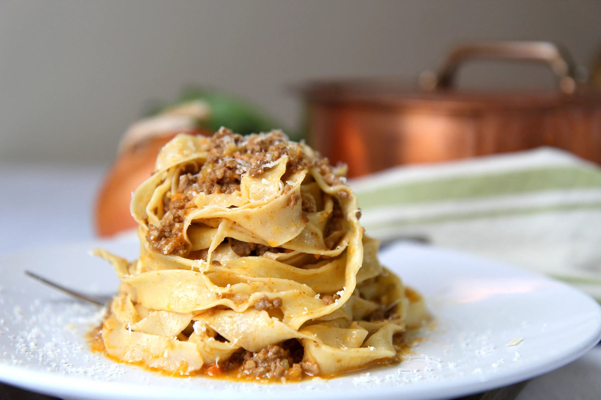
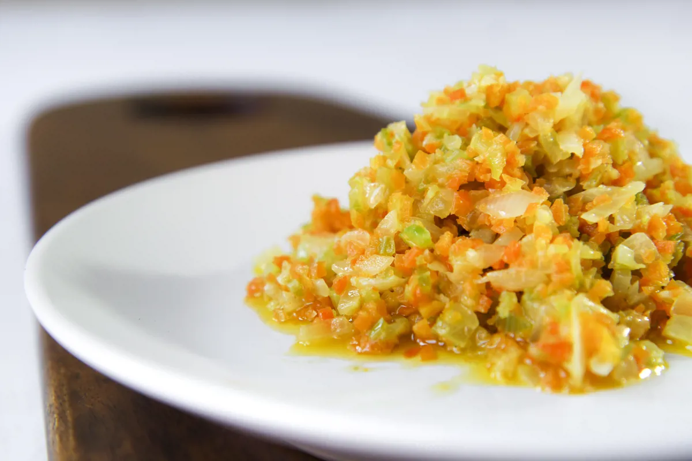
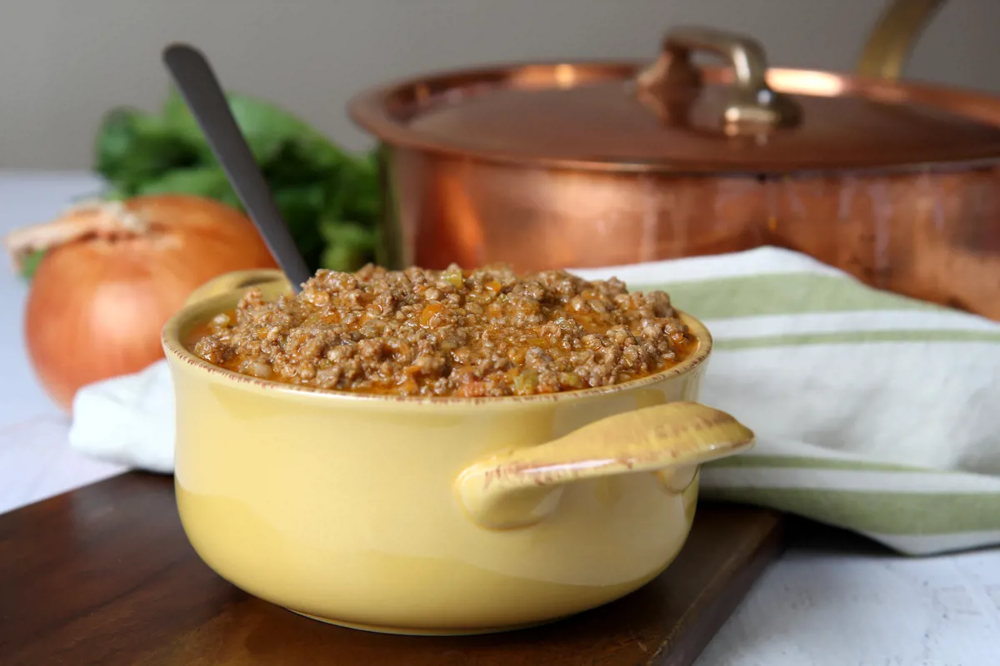

Home
Bolognese Ragù

Description
Learn how to make a classic Bolognese ragù, or Ragù alla Bolognese, with Filippo Trapella's family recipe. Served with homemade tagliatelle, this ragù recipe is a quintessential dish of Emilia-Romagna.
Ingredients
- 300g of beef mince, 15% fat
- 150g of pork mince
- 50g of unsalted butter
- 50g of onion, finely chopped
- 50g of carrots, finely chopped
- 50g of celery, finely chopped
- 125ml of red wine
- 30g of tomato paste, triple concentrated
- 125ml of whole milk
- salt, to taste
- black pepper, to taste
Method
- Place a large thick-bottomed saucepan over a medium heat. Add the minced pork belly to the pot and cook until all the liquid from the meat has evaporated, then add the minced beef and cook until golden, stirring frequently. Transfer the meat to a bowl and set aside
- Add the butter to the saucepan and place over a medium heat. Add the onion, carrot and celery and cook until the onions are very soft and translucent. Finally, add the tomato paste and sauté for 5 minutes more, stirring occasionally

- Return the meat to the saucepan, turn up the heat and pour in the red wine. Cook over a high heat for 2 minutes, then cover the pan and turn the heat down to low
- Leave the ragù alla Bolognese to simmer very gently for at least 3 hours. The meat must not be excessively dry. Pour in the whole milk and cook for a further 40 minutes just before serving
- Ragù alla Bolognese is very tasty when just cooked, but is even better the next day. Reheat the sauce over a very low heat with a little bit of milk and use it to season pasta or simply eat it with slices of toasted bread
